User approved all six drawings as drawn via Claude relay luffy-skills #6. Relay #7 supplies exact 256×256 edge-to-edge tile frames for gigantArm; the tube remains about 87 px rather than the specified 96 px. Claude cleared gigantFist wrist continuity in-game because the fist covers the arm end. Several raw canvas ratios differ from the requested square-cell strips. Astra passed B6 anatomy/scale on its final quantized atlas; engine continuation and contact still need Claude’s checks. Visual approval and tile repair do not clear those checks.
Batch brief: SKILLS_REVAMP.md. Attempt ledger and source hashes: candidate inventory.
Three frames: wind-back with fist fully in-cell, then the giant arm leaves the right edge cleanly, followed by a held punch. Candidate source: 3/3 calls. Packed cells 97–99 at bodyHeight 198. The v04 source corrects the oversized sandals from v03; measured f0 placement +6px keeps the full fist inside the cell. Astra manually passed anatomy/scale on the final quantized cells. Active arm endpoints are at x254 and x253 (1–2 transparent columns); the packer still reports its 4px margin warning. The straw-hat head probe remains exempt as a known false positive.
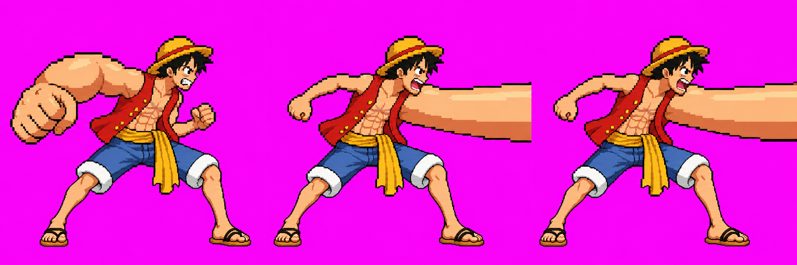
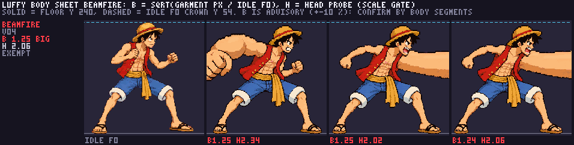
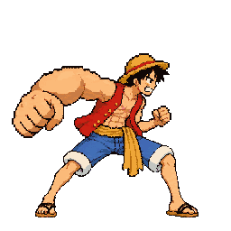
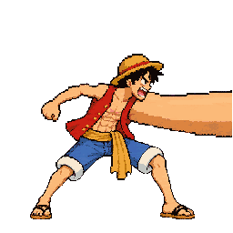
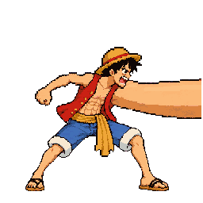
Hand anchors measured on packed cells: f0 [47,132] inside fist; f1 [254,125] and f2 [253,124] at the centered arm exits. The exact sheet SHA-256 is 99DCD0B3D8726949DE356B373D12A6832B993ACDB8E670B5F944C07238EF0EF6. Body sheet reports B≈1.25 (includes the giant arm) and H≈2.06 (known false-positive probe); Astra’s manual segment comparison is the technical verdict.
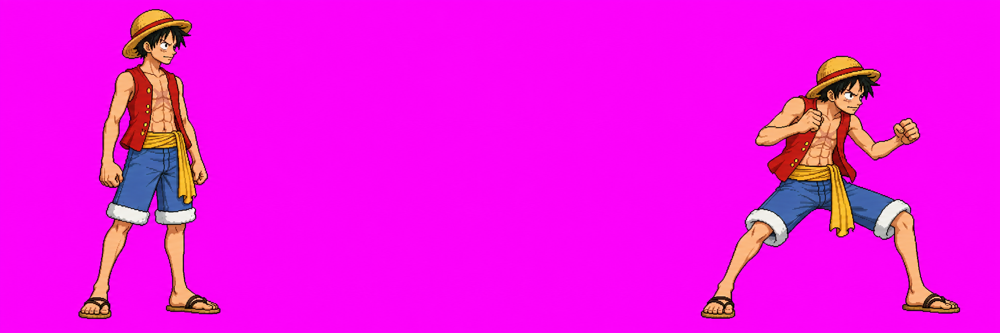
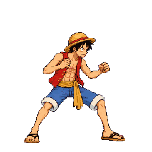
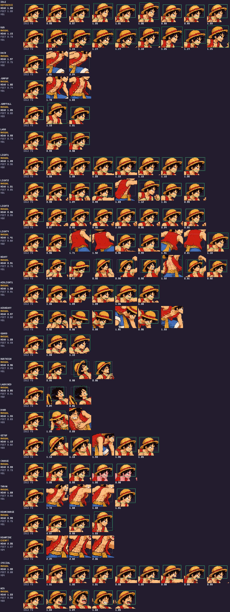
Frames are the exact 256×256 output from the candidate VFX pack; displayed on a stage-colored backdrop.
Air puff → open rings → puffs → drift/fade. The selected call’s panel dividers were removed using measured raw sidecar rectangles; the packer maps 6/6.
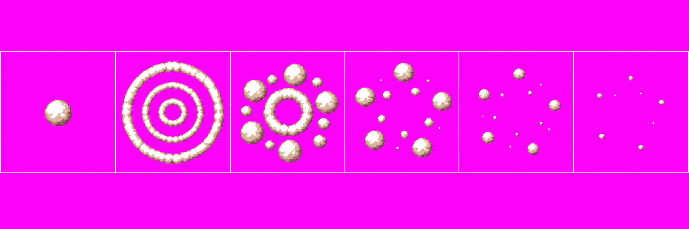
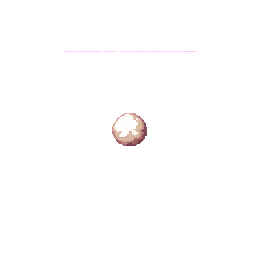
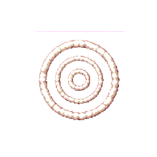
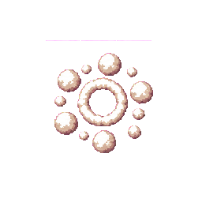
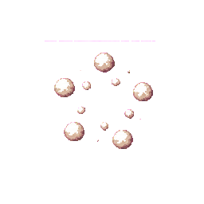
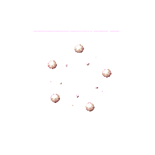
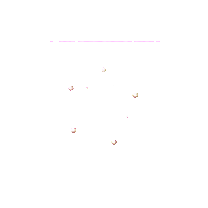
Arm 2/2 now reaches both tile edges in the supplied frames; tube thickness remains about 87/96 px. Fist 4/4; Claude cleared wrist continuity in-game because the fist covers the arm end. Raw fist strip remains 3:1 rather than requested 4:1.
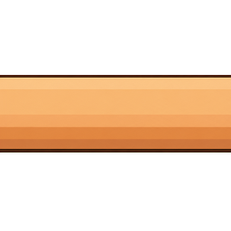
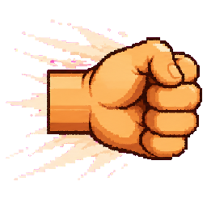
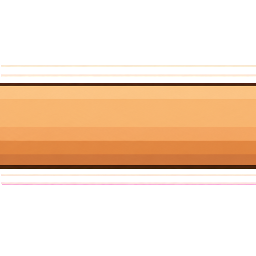
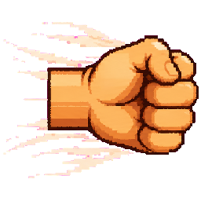
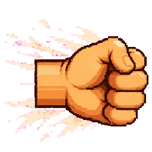
Dark-rimmed burst into stone chips and diminishing dust; no broad white-out. Packer maps 8/8 with one touching pose group split.
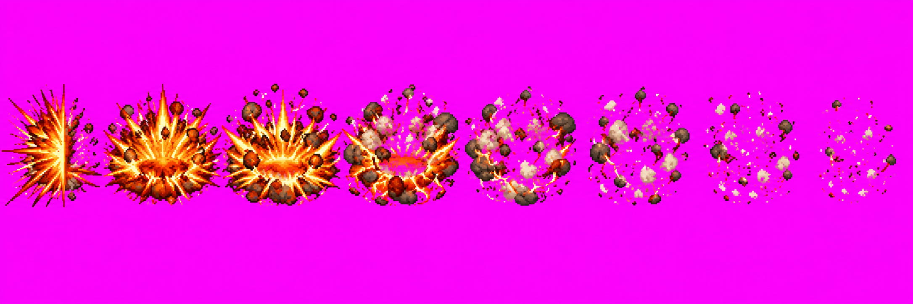
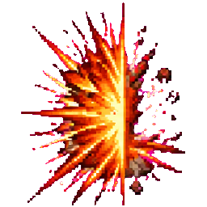
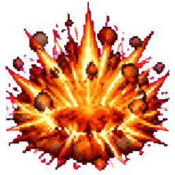
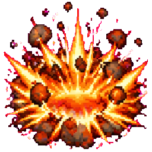
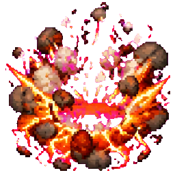
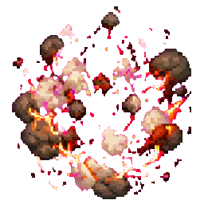
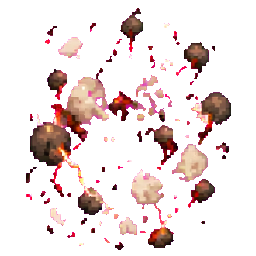
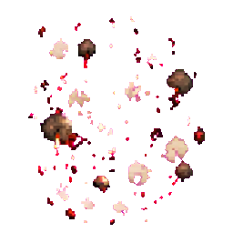
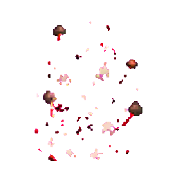
Six-panel recovery gag. The selected source is off the requested 1536×256 canvas ratio; its packed character size is shown beside approved idle f0 for comparison. Chibi is intentionally SD and is not subject to Astra audit.
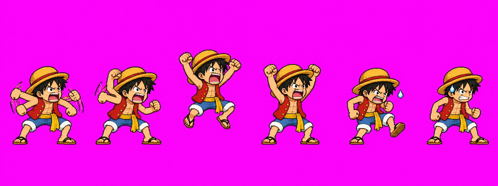
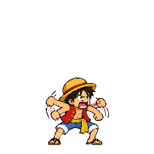
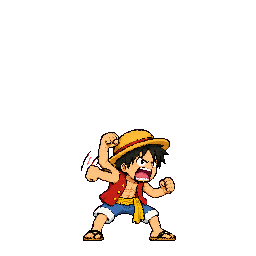
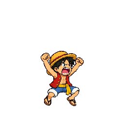
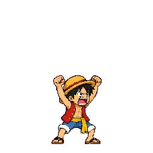
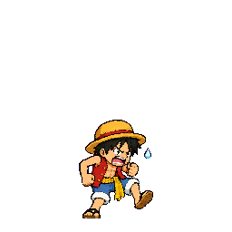
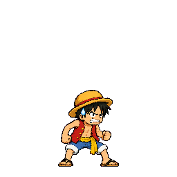
All six images were approved as drawn via Claude relay luffy-skills #6: beamFire v04, gear3Puff v01, gigantArm v01, gigantFist v01, gigantImpact v01 and luffyChibi v01. Relay #7 corrects the gigantArm tile inputs; the tube-thickness deviation remains. Claude cleared gigantFist wrist continuity in-game. Runtime continuation/contact checks remain Claude's.